manual_annotation_sheet.csv 的 manual_category 列，
理由填 notes（若同意自动建议，写 agree 即可）。
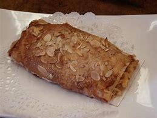
images/test/unlabeled/000170.jpg参考：Baked apple strudel with almond slices on the surface on a white plate.
ResNet18+GRU：a piece of pumpkin cake with a super brown crust and a piece of brown bread on a white plate
ViT+Transformer：a large piece of apple strudel with thin yellow apple pieces and white sugar
建议类别：食材误识别 (ingredient_misidentification)
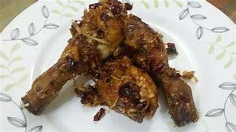
images/test/unlabeled/000307.jpg参考：Some bone-in grilled Ayam goreng seasoned with various fresh spices.
ResNet18+GRU：a plate of ayam goreng with a crispy skin served with a small piece of beer
ViT+Transformer：three pieces of ayam goreng on a white plate
建议类别：食材误识别 (ingredient_misidentification)
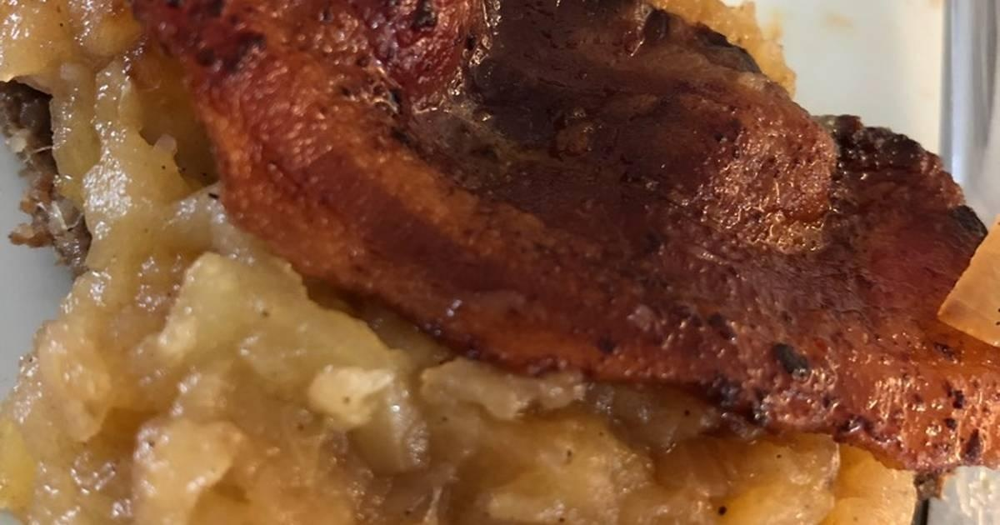
images/test/unlabeled/000008.jpg参考：A large slice of oily grilled AEbleflaesk in combination with mashed apples
ResNet18+GRU：a large plate of aebleflaesk with a lot of pork belly and pork in a brown sauce
ViT+Transformer：a thick piece of aebleflaesk with crispy apple pieces and apple pieces and apple pieces
建议类别：食材误识别 (ingredient_misidentification)
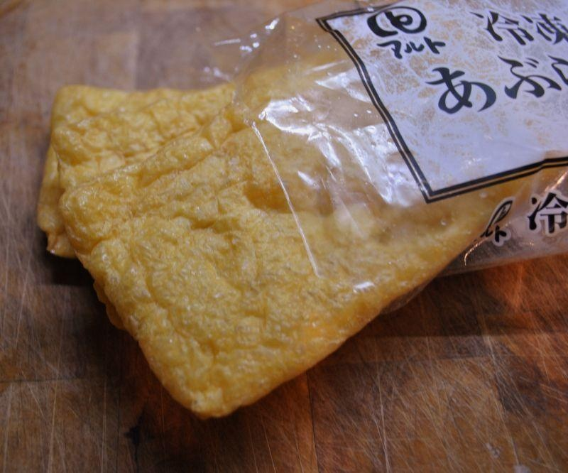
images/test/unlabeled/000020.jpg参考：Three pieces of yellow fried thin aburaage stored in a plastic bag.
ResNet18+GRU：a large piece of golden brown aburaage with a super brown surface and a piece of white paper
ViT+Transformer：a piece of apple pie with a crispy crust and a filling of apples as fillings
建议类别：食材误识别 (ingredient_misidentification)
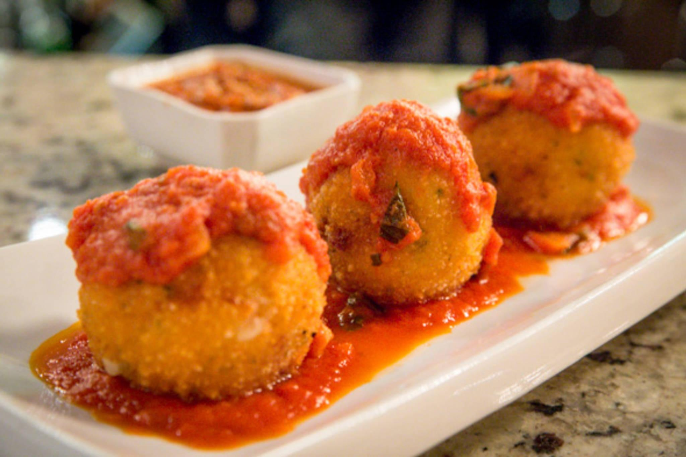
images/test/unlabeled/000206.jpg参考：Three deep fried arancini with ketchup on top and beneath on a long white plate
ResNet18+GRU：crab crab in a red sauce and a small bowl of ketchup on the side
ViT+Transformer：a white plate of chicken cacciatore with crispy skin and juicy chicken in thick sauce
建议类别：食材误识别 (ingredient_misidentification)
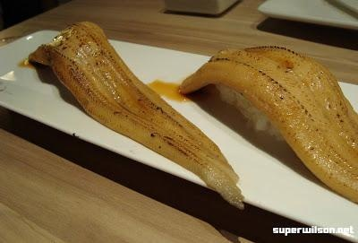
images/test/unlabeled/000084.jpg参考：Two whole slices of boiled saltwater anago on top of the sushi rice
ResNet18+GRU：two pieces of brown bread with a small piece of white sauce on the surface on a white plate
ViT+Transformer：two anago rolls with oily brown surface and a thin slice of ginger on the side and an oily and
建议类别：食材误识别 (ingredient_misidentification)
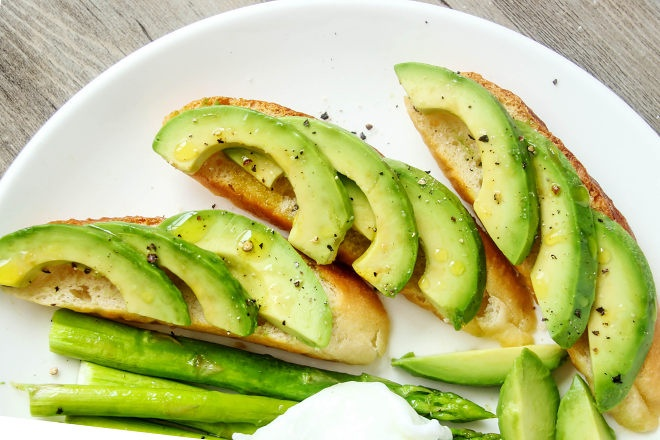
images/test/unlabeled/000230.jpg参考：baked avocado bread with fresh avocado slices on top accompanied with green asparagus
ResNet18+GRU：a plate of green peas with green beans and green peppers on a white plate
ViT+Transformer：a white plate of three pieces of bread covered with green and green sauce and the other
建议类别：食材误识别 (ingredient_misidentification)
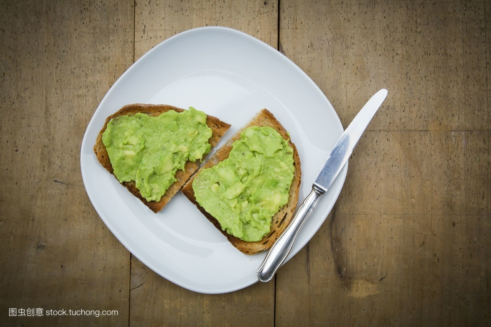
images/test/unlabeled/000236.jpg参考：Two slices of avocado bread made with toasted whole wheat bread and creamy avocado spread.
ResNet18+GRU：two pieces of bread bread with a crispy surface and a few slices of bread on the side
ViT+Transformer：two slices of toast with mashed avocado on top and a silver fork next to it
建议类别：食材误识别 (ingredient_misidentification)
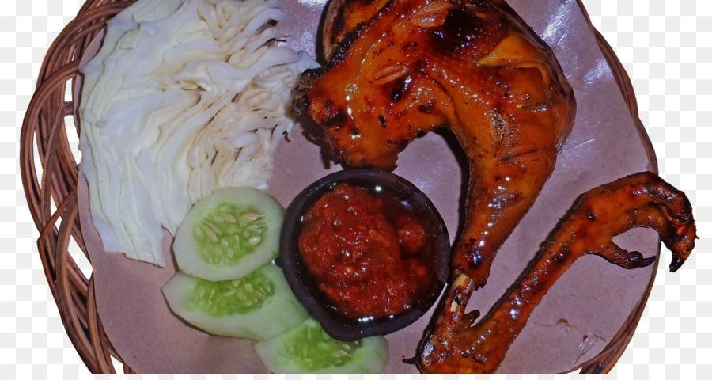
images/test/unlabeled/000282.jpg参考：grilled ayam bakar with cucumber slices, cabbage and red chili sauce
ResNet18+GRU：a plate of fried pork slices with lettuce leaves and lettuce leaves
ViT+Transformer：a top view of ayam goreng with a dish of sauce and a piece of cucumber and a small bowl of white sauce
建议类别：食材误识别 (ingredient_misidentification)
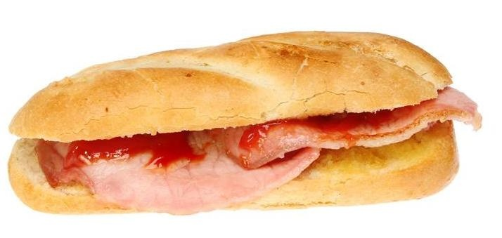
images/test/unlabeled/000347.jpg参考：A nice toasted bacon baguette sandwich, seasoned with some ketchup.
ResNet18+GRU：a sandwich with some bacon slices and bacon in the middle
ViT+Transformer：a sandwich with two slices of toast and a red tomato inside and yellow mustard
建议类别：食材误识别 (ingredient_misidentification)
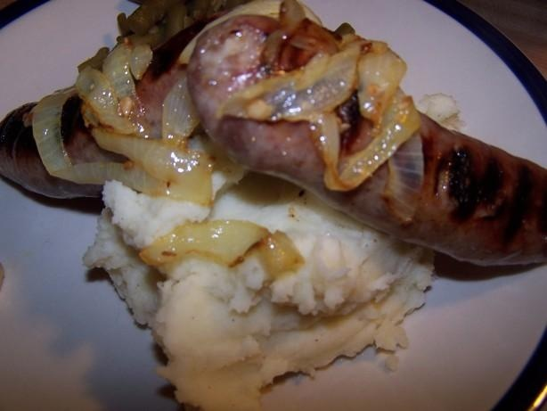
images/test/unlabeled/000430.jpg参考：lightly baked bangers with sliced onions on the top of mashed potatoes.
ResNet18+GRU：a plate of pork knuckle with a brown sauce and a piece of pork on the side
ViT+Transformer：a plate of bangers and mash with some onion sauce and some mashed potatoes on the top and some mashed potatoes on the bottom
建议类别：食材误识别 (ingredient_misidentification)
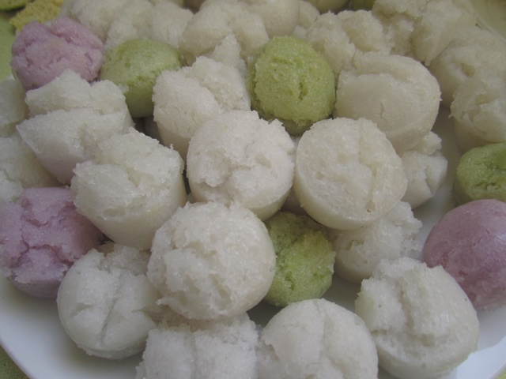
images/test/unlabeled/000443.jpg参考：steamed banh bo with spongy skin tined into green and purple.
ResNet18+GRU：many white banh bos are placed on a white plate
ViT+Transformer：a pile of freshly baked banh bo cakes in the middle and grated coconut
建议类别：食材误识别 (ingredient_misidentification)
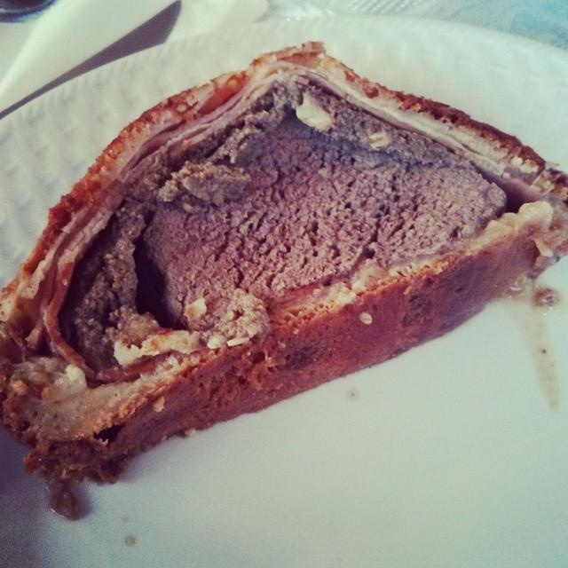
images/test/unlabeled/000490.jpg参考：a whole roasted beef with cracks on the surface coated with a pasty served on a plate.
ResNet18+GRU：a piece of beef pie with a thick and crispy skin on the surface and a piece of bread
ViT+Transformer：a piece of brown applesauce cake with black raisins and cinnamon inside and a piece of chocolate on the top in a plate
建议类别：食材误识别 (ingredient_misidentification)
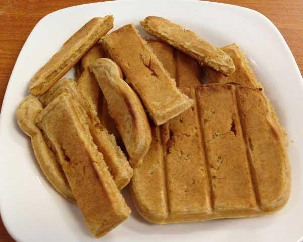
images/test/unlabeled/000025.jpg参考：A white square plate full of deep-fried aburaage strips with brown surface and a pocket in the middle
ResNet18+GRU：a plate of golden brown aburaage with a super crunchy texture
ViT+Transformer：two pieces of and thin slices of white bread with a brown and soft texture
建议类别：食材误识别 (ingredient_misidentification)
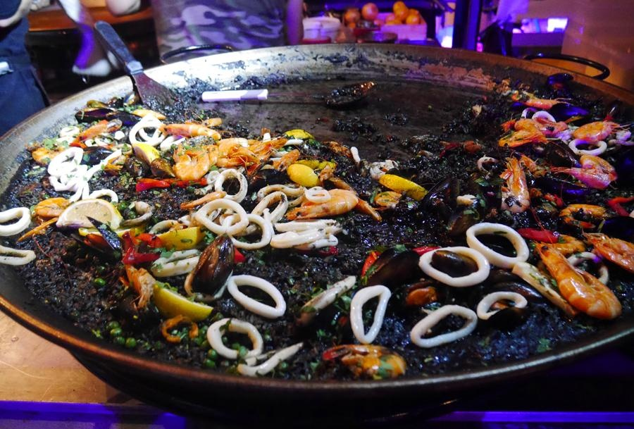
images/test/unlabeled/000217.jpg参考：A large pan of Arros negre with grilled shrimps and other seafood.
ResNet18+GRU：a black plate of arros negre with a lot of black pepper and black pepper on the top
ViT+Transformer：a large plate of arros negre with squid rings prawns and parsley on it strips and a next to it
建议类别：食材误识别 (ingredient_misidentification)
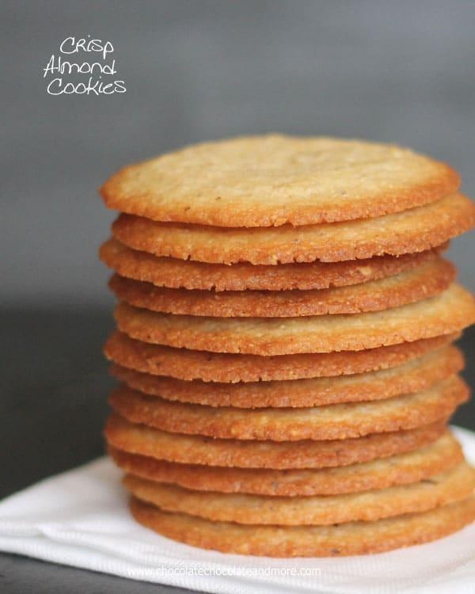
images/test/unlabeled/000053.jpg参考：Big thin round almond biscuits baked brown and stacked on a square white plate.
ResNet18+GRU：some golden corn dogs stacked together on a white plate
ViT+Transformer：a stack of golden brown fried corn tortillas stacked together
建议类别：烹饪方式错误 (cooking_method_error)
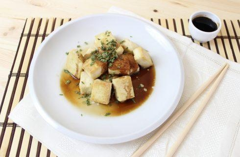
images/test/unlabeled/000032.jpg参考：Pan-fried agedashi tofu with a light brown surface topped with some chopped green onions in soy sauce.
ResNet18+GRU：a plate of juicy agedashi tofu with chopped spring onion and sprinkled with chopped spring onions
ViT+Transformer：a plate of svickova consists of some braised pork belly slices and topped with some fried potato wedges and finely chopped green onions slices
建议类别：烹饪方式错误 (cooking_method_error)
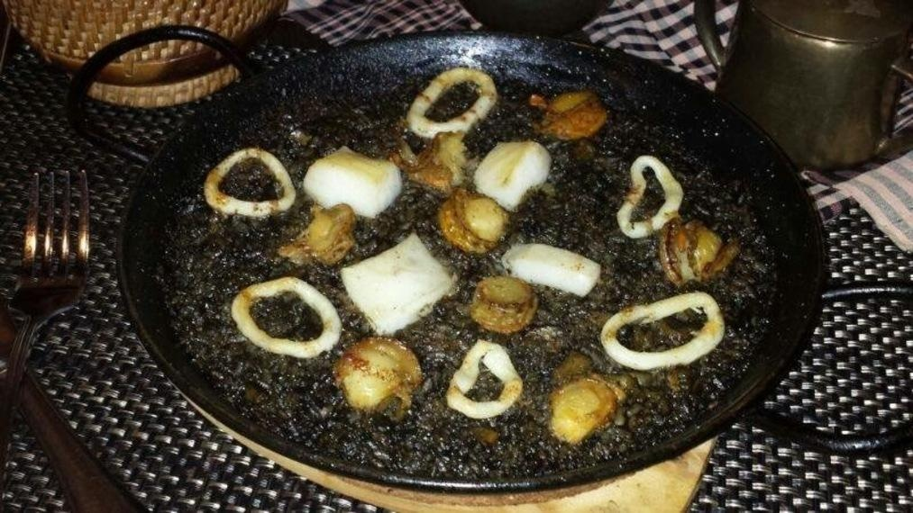
images/test/unlabeled/000212.jpg参考：a pan of arros negre covered with scallops, boiled chopped squids and squid rings
ResNet18+GRU：a black plate of arros negre with some black pepper and black pepper on the surface
ViT+Transformer：an iron plate of black arros negre with red prawns squid rings and some fried tofu slices
建议类别：烹饪方式错误 (cooking_method_error)
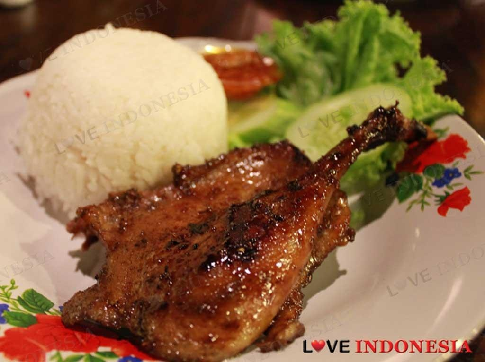
images/test/unlabeled/000281.jpg参考：well baked ayam bakar with caramelized skin served with rice and lettuce
ResNet18+GRU：a large piece of pork knuckle with a brown sauce and a few slices of lemon on the side and a piece of
ViT+Transformer：a piece of grilled ayam bakar with grilled chicken a piece of cucumber and sour cream accompanied with cucumber slices and lettuce leaves and tomato slices slices
建议类别：烹饪方式错误 (cooking_method_error)
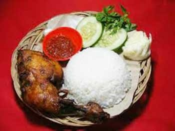
images/test/unlabeled/000291.jpg参考：well roasted ayam betutu served with rice, cucumber slices and red sauce on a rattan plate
ResNet18+GRU：a plate of nasi goreng with a super crispy skin and a small piece of red sauce on the side
ViT+Transformer：a plate of ayam goreng with a dish of sauce some steamed white rice and red chili oil slices and some chopped green onion
建议类别：烹饪方式错误 (cooking_method_error)
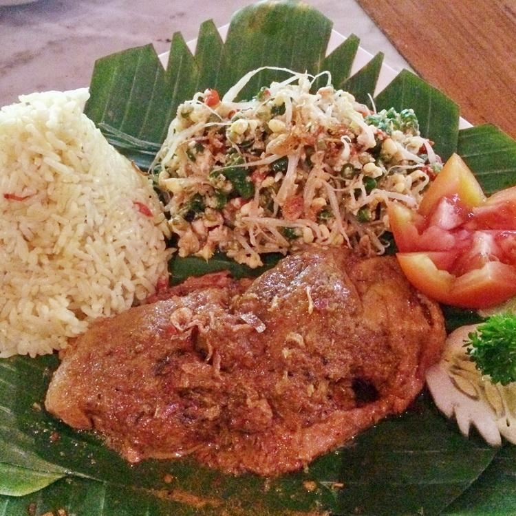
images/test/unlabeled/000297.jpg参考：Ayam betutu served with bean sprouts and seasoned white rice.
ResNet18+GRU：a plate of nasi goreng with rice fried eggs and green onions
ViT+Transformer：a large chunk of grilled ayam betutu accompanied with vegetable leaves a tomato wedge and cucumber slices on the side and a leaves
建议类别：烹饪方式错误 (cooking_method_error)
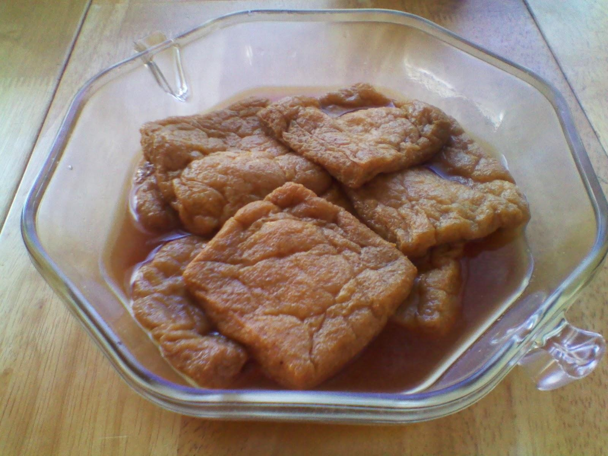
images/test/unlabeled/000024.jpg参考：Several pieces of boiled square aburaage with wrinkled surfaces placed in the brown sauce.
ResNet18+GRU：a large bowl of dark brown apple sauce with a lot of cinnamon
ViT+Transformer：a plate of freshly baked apple cobbler food with a apple on top on a transparent plate
建议类别：烹饪方式错误 (cooking_method_error)
images/test/unlabeled/000047.jpg参考：A full bowl of creamy aligot together with a square plate of grilled sausages and a glass of red wine
ResNet18+GRU：a small plate of brown bread with a layer of cream on the surface and a small piece of bread on the side
ViT+Transformer：a plate of freshly baked banana slices next to a plate of banana slices and a glass of drink slices
建议类别：烹饪方式错误 (cooking_method_error)
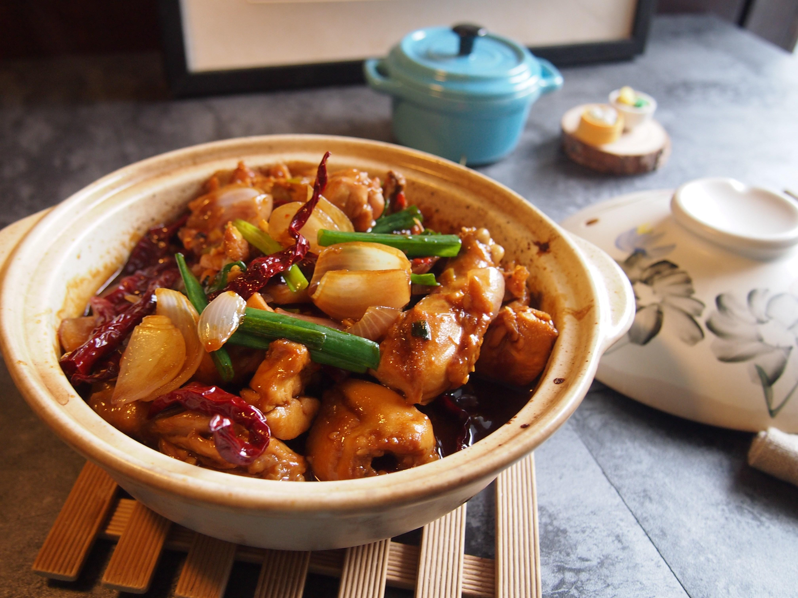
images/test/unlabeled/000099.jpg参考：Braised chicken and onions and dry red pepper in casserole with scallions on top
ResNet18+GRU：in the white bowl is a pot of chicken knuckles and ginger stew with green onions and ginger
ViT+Transformer：a pot of pot roast with lots of onions potatoes and scallions and a stainless steel spoon on it and a bottle of wine beside it
建议类别：烹饪方式错误 (cooking_method_error)
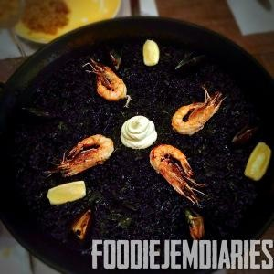
images/test/unlabeled/000215.jpg参考：Arros negre topped with grilled shrimps, sour cream, and lemon wedges.
ResNet18+GRU：a black plate of black stinky tofu with black pepper and black pepper on top
ViT+Transformer：a large bowl of black arros negre with three roasted prawns on top slices and a lemon wedge aside
建议类别：烹饪方式错误 (cooking_method_error)
images/test/unlabeled/000329.jpg参考：scrambled eggs and long slices of grilled bacon served with pan-fried sausages
ResNet18+GRU：a plate of fried chicken with a crispy texture served with a fork on the side and a plate of sauce and a fork and a fork
ViT+Transformer：two pieces of grilled bacon in combination with fried potato and mashed potatoes served with a fork and parsley
建议类别：烹饪方式错误 (cooking_method_error)
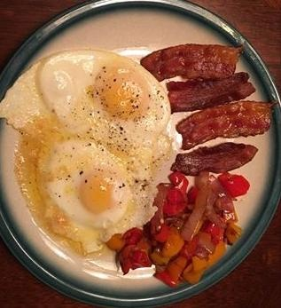
images/test/unlabeled/000332.jpg参考：two sunny-side-up fried eggs and four bacon slices accompanied with chopped peppers and onions
ResNet18+GRU：a bowl of rice with yellow rice and yellow rice served with a spoon on the side
ViT+Transformer：the red bowl contains some white grits with some bacon and two slices of boiled eggs next to it slices
建议类别：烹饪方式错误 (cooking_method_error)
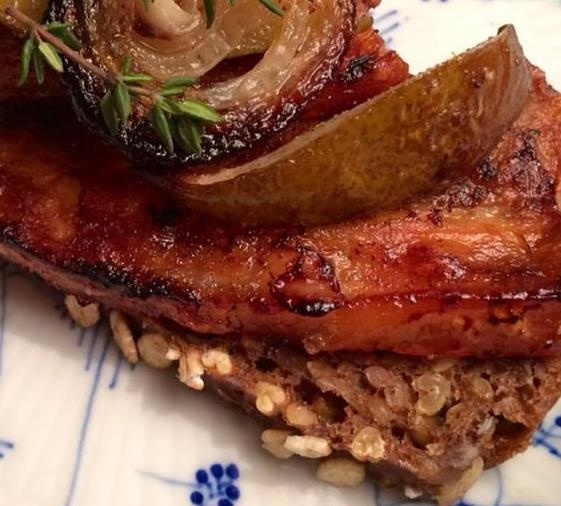
images/test/unlabeled/000004.jpg参考：Thick oily roasted AEbleflaesk with brown pieces of charred onions served over rye bread.
ResNet18+GRU：a large piece of unagi on a black plate with a piece of red pepper on the side
ViT+Transformer：a plate of brown ikan goreng made with fried fish and parsley
建议类别：烹饪方式错误 (cooking_method_error)
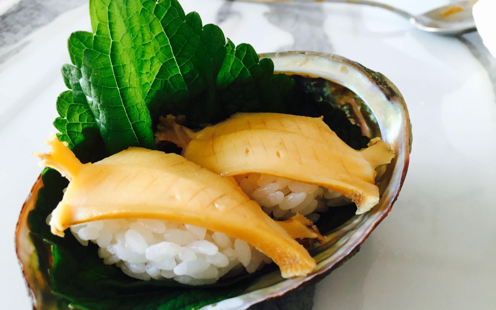
images/test/unlabeled/000011.jpg参考：Two pieces of boiled abalone slices on sushi rice placed on the top of sue cotyledons in a shell of an abalone.
ResNet18+GRU：a white plate of fish made with a mixture of fish and fish and served with a few slices of pickled onions
ViT+Transformer：a bowl of rice pudding topped with cooked meat and green onions and a few slices of lemon
建议类别：烹饪方式错误 (cooking_method_error)
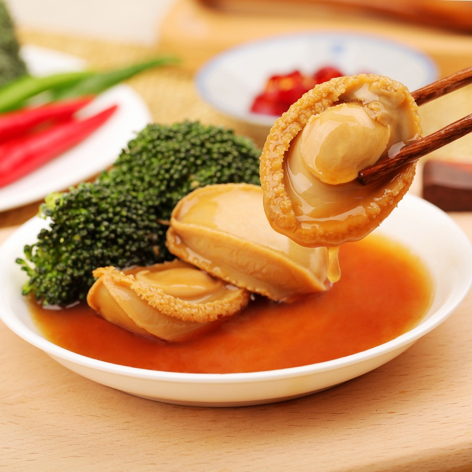
images/test/unlabeled/000016.jpg参考：Three pieces of braised abalones with tender texture and the sauce over them together with broccoli next to them
ResNet18+GRU：a plate of fried chicken with a piece of white cream and a few slices of bread on the side
ViT+Transformer：a plate of juicy steamed clams with broccoli and chili oil
建议类别：烹饪方式错误 (cooking_method_error)
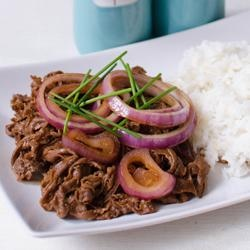
images/test/unlabeled/000579.jpg参考：rice adding bistek full of thin fried beef and onion rings on a square plate.
ResNet18+GRU：a plate of bistek with some beef slices and some green onion rings on the top of the plate
ViT+Transformer：a plate of bistek with onions onions and shredded onions
建议类别：食材漏述 (missing_ingredient)
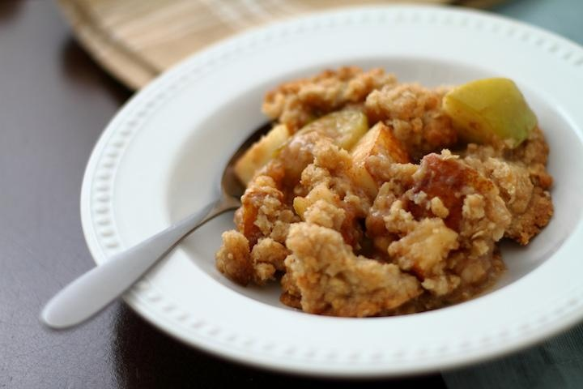
images/test/unlabeled/000131.jpg参考：Apple crisps covered with flour baked into brown and placed on a white round plate.
ResNet18+GRU：a white plate of golden apple sauce with a thick and white sauce on the side
ViT+Transformer：a plate of jambalaya made of rice shrimps and potatoes slices and a spoon placed on a white round plate
建议类别：食材漏述 (missing_ingredient)
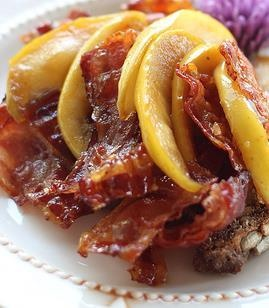
images/test/unlabeled/000000.jpg参考：Baked thin AEbleflaesk slices with brown dried surface alternate with yellow apple slices.
ResNet18+GRU：a plate of aebleflaesk with a lot of pork belly and yellow apple slices
ViT+Transformer：a plate of aebleflaesk with red thin slices of brown pork belly and a piece of brown bread
建议类别：食材漏述 (missing_ingredient)
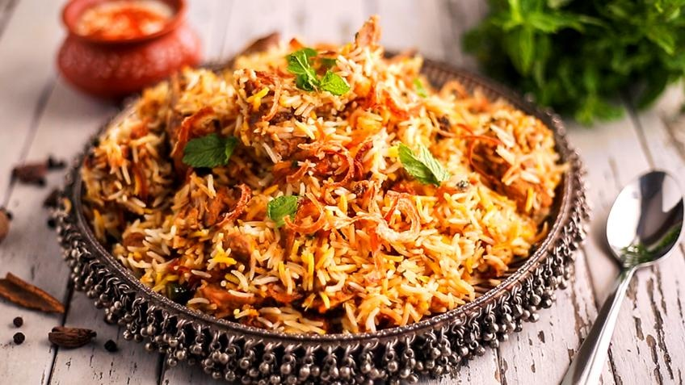
images/test/unlabeled/000560.jpg参考：a pot of biryani full of rice mixed with roasted pork with golden skin.
ResNet18+GRU：a pot of biryani with chopped green onion and coriander
ViT+Transformer：biryani with parsley leaves and chopped red pepper on a large plate
建议类别：食材漏述 (missing_ingredient)
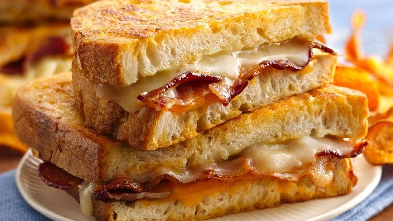
images/test/unlabeled/000345.jpg参考：Light toasted bacon sandwiches with crispy bacon and fried eggs.
ResNet18+GRU：a sandwich with a layer of bacon and cheese slices and a layer of cheese on the top
ViT+Transformer：a plate of golden sausage sandwich prepared using bread and meat
建议类别：食材漏述 (missing_ingredient)
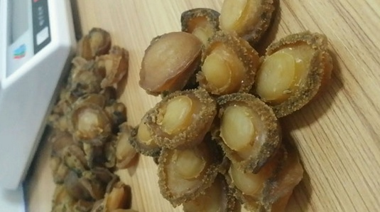
images/test/unlabeled/000014.jpg参考：Two piles of dried abalones with brown, hard and tough surface.
ResNet18+GRU：a plate of poutine with some shrimps and white rice
ViT+Transformer：some yellow konnyaku on a white plate with black edges and white
建议类别：食材漏述 (missing_ingredient)
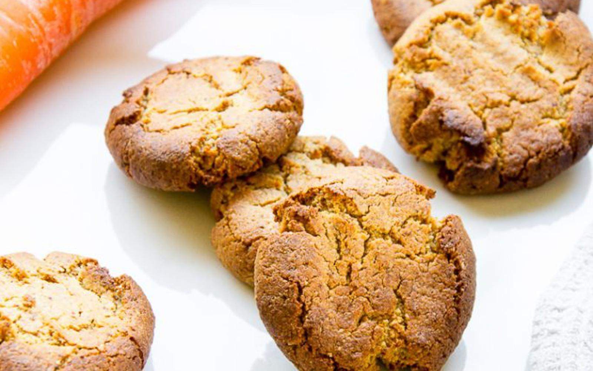
images/test/unlabeled/000054.jpg参考：Round thick almond biscuits baked brown with dried and cracked surfaces.
ResNet18+GRU：some brown anzac biscuits with a crispy surface and some butter on the surface
ViT+Transformer：three round pieces of brown anzac biscuits with oats on the surface
建议类别：食材漏述 (missing_ingredient)
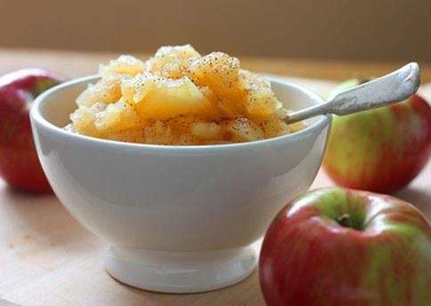
images/test/unlabeled/000161.jpg参考：Yellow apple sauce made with boiled blocks of apples and some cinnamon on its top.
ResNet18+GRU：a small bowl of yellow apple cobbler with a small piece of milk and a fork on the side
ViT+Transformer：a small bowl of juicy and waxy spatzle with white cheese and parsley
建议类别：食材漏述 (missing_ingredient)
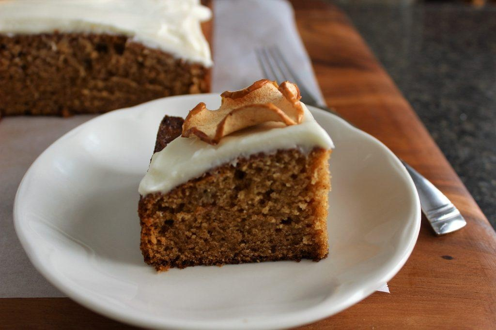
images/test/unlabeled/000185.jpg参考：A piece of fluffy apple sauce cake topped with whipped cream and a slice of dried apple
ResNet18+GRU：a piece of pumpkin cake with a layer of cream on the top and a piece of cream on the top
ViT+Transformer：a piece of pumpkin bread with a thick texture made of some cream and some walnuts placed on a square white plate
建议类别：食材漏述 (missing_ingredient)
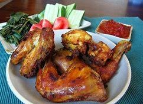
images/test/unlabeled/000299.jpg参考：deep-fried ayam goreng with crispy skin accompanied with tomato slices, cucumbers and red chili sauce
ResNet18+GRU：a plate of fried chicken chicken with a crispy surface and a fork
ViT+Transformer：a plate of ayam goreng with golden crispy skin served with cherry tomatoes and cucumbers
建议类别：食材漏述 (missing_ingredient)
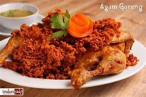
images/test/unlabeled/000306.jpg参考：Deep fried Ayam goreng with golden crispy outside, served with crispy granules.
ResNet18+GRU：a plate of ayam bakar with a piece of lemon and a piece of lemon on the side
ViT+Transformer：a plate of rendang made with mutton served with green spices and tomatoes slices strips slices slices
建议类别：食材漏述 (missing_ingredient)
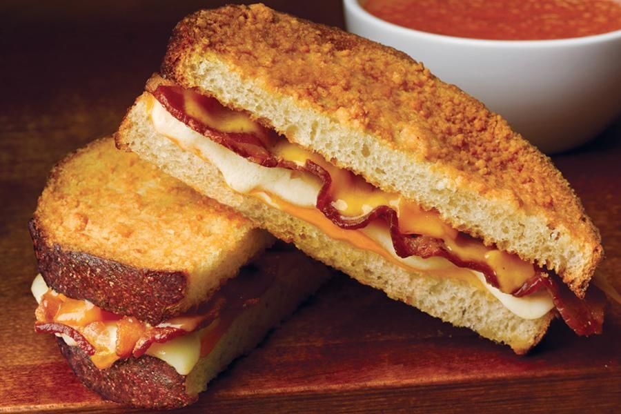
images/test/unlabeled/000348.jpg参考：Two toasted bacon sandwiches with crispy outside and juicy fillings.
ResNet18+GRU：two sandwiches with bacon slices and cheese on a white plate with a layer of cheese and cheese
ViT+Transformer：a sandwich with two slices of toast and a layer of bacon between them on a wooden board slices slices and
建议类别：食材漏述 (missing_ingredient)
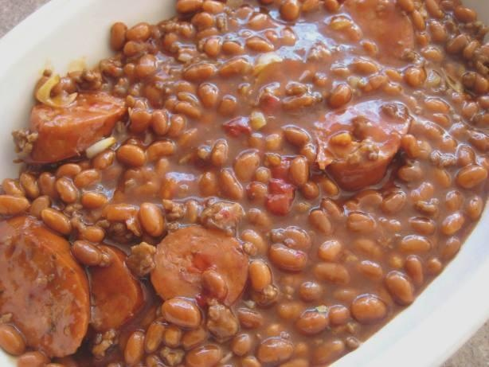
images/test/unlabeled/000360.jpg参考：brown baked beans cooked with sausages and meat in thick sauce
ResNet18+GRU：a thick brown brown sauce with a thick texture and sprinkled with some parsley
ViT+Transformer：a thick serve of refried beans cooked with soybeans in thick brown sauce and a sprinkling of sesame
建议类别：食材漏述 (missing_ingredient)
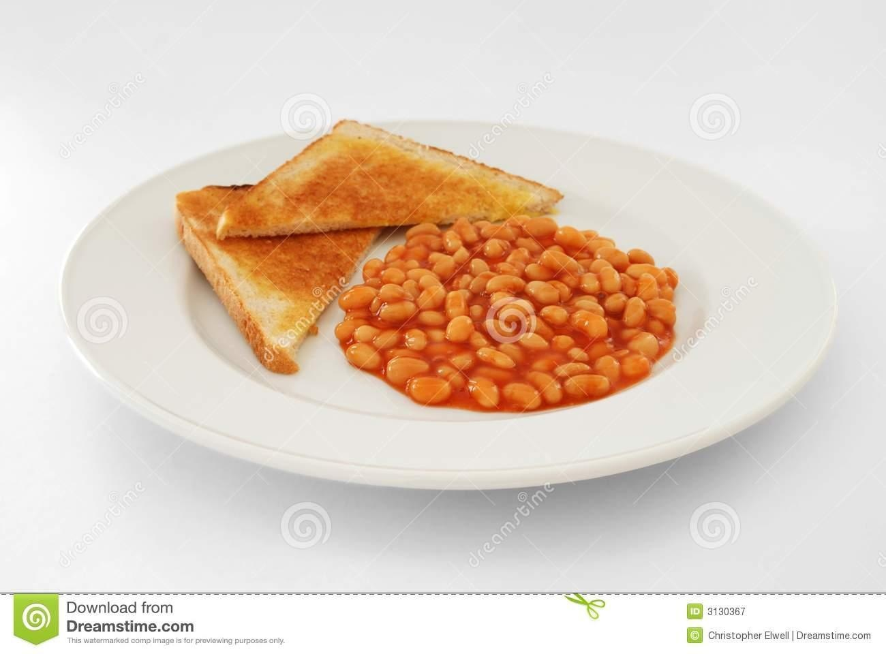
images/test/unlabeled/000367.jpg参考：Tender baked beans with tomato sauce, accompanied with two slices of toast.
ResNet18+GRU：two pieces of corn dogs with a golden texture and a golden brown sauce on a white plate and
ViT+Transformer：a piece of golden toast with sliced plums on top and some beans next to it
建议类别：食材漏述 (missing_ingredient)
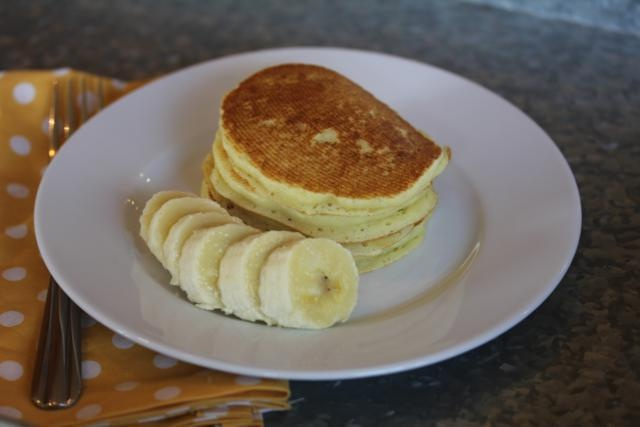
images/test/unlabeled/000381.jpg参考：a pile of pan-fried banana pancakes with fresh banana slices on a round plate
ResNet18+GRU：a plate of brown bread with a brown surface and white cream on the top and a fork on
ViT+Transformer：a piece of cheese bun with two slices of bread on the surface and a slice of lemon on the side in the
建议类别：食材漏述 (missing_ingredient)
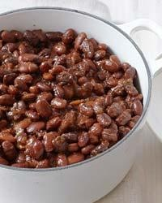
images/test/unlabeled/000368.jpg参考：A white oven of baked beans with reddish brown color and moist texture.
ResNet18+GRU：a bowl of dark brown beans with a brown texture
ViT+Transformer：a plate of dark red beans with a lot of meat sauce in it in a white round bowl
建议类别：无依据添加 (unsupported_addition)
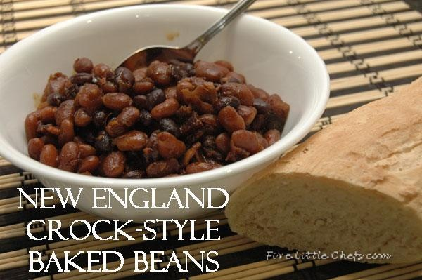
images/test/unlabeled/000363.jpg参考：dry black baked beans in a white ceramic bowl with a baguette nearby
ResNet18+GRU：a bowl of brown natto with a lot of white beans on the side
ViT+Transformer：a bowl of dark brown peanuts with a spoon in it and a silver spoon in the bowl
建议类别：无依据添加 (unsupported_addition)
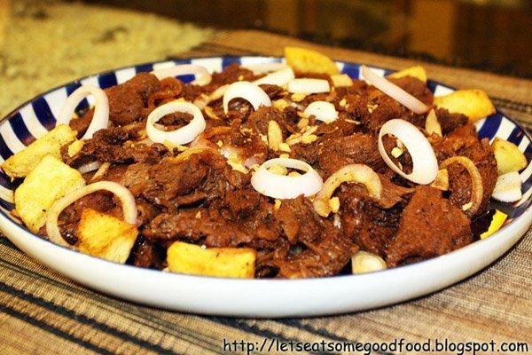
images/test/unlabeled/000584.jpg参考：Many small pieces of fried Bistek sprinkled with onion rings and fried tofu on a white plate with blue stripes.
ResNet18+GRU：bistek with chopped spring onion rings and onion rings on top of a plate of rice
ViT+Transformer：a plate of bistek with onion rings beef and onion rings
建议类别：无依据添加 (unsupported_addition)
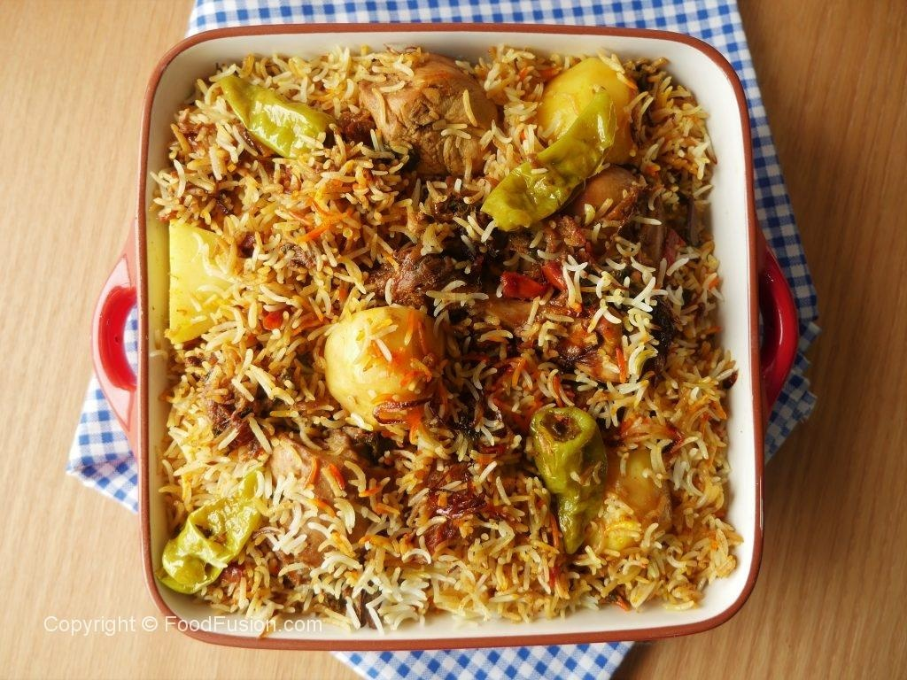
images/test/unlabeled/000562.jpg参考：biryani cooked with slender rice, diced potatoes, and boiled chicken flavored with bell peppers in a square bowl.
ResNet18+GRU：biryani with a lot of chopped spring onion and a spoon in a bowl of chili sauce and green onions
ViT+Transformer：a top view of biryani with chicken potatoes onions bell peppers and celery
建议类别：无依据添加 (unsupported_addition)
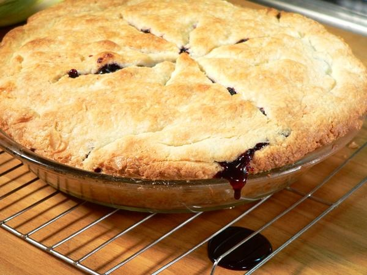
images/test/unlabeled/000636.jpg参考：a freshly baked blueberry pie cut into pieces with blueberry jam dripping out from the crack of the surface.
ResNet18+GRU：a round round pie with a blackberry pie crust with a layer of blueberry pie
ViT+Transformer：a whole apple pie cut into two pieces in the middle placed on a wooden board and
建议类别：无依据添加 (unsupported_addition)
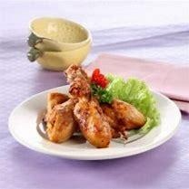
images/test/unlabeled/000304.jpg参考：Grilled Ayam goreng made out of chicken drumsticks, accompanying by fresh lettuce, served on a white plate.
ResNet18+GRU：a plate of ayam ayam with a lot of green spices served with a bowl of sauce
ViT+Transformer：a plate of ayam goreng with a small bowl of sauce some parsley leaves and a small dish of sauce pieces
建议类别：无依据添加 (unsupported_addition)
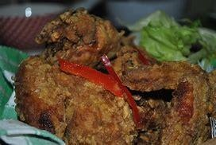
images/test/unlabeled/000305.jpg参考：Golden and crispy fried Ayam goreng made with chicken cuts, garnished with red bell pepper slices.
ResNet18+GRU：a plate of ikan goreng with red pepper and red pepper
ViT+Transformer：a plate of ikan goreng made with red pepper slices tomatoes and lettuce slices and a small amount of chili and white
建议类别：无依据添加 (unsupported_addition)
images/test/unlabeled/000333.jpg参考：two poached eggs circled with bacon slices and accompanied with baked toast
ResNet18+GRU：two pieces of bread and a piece of bread on the surface and a piece of bread on the surface and a piece of bread on the side and some slices of bread on the side
ViT+Transformer：two slices of bacon and cheese sandwiches with a fork on the side and a knife and fork on the side and a glass of
建议类别：无依据添加 (unsupported_addition)
images/test/unlabeled/000103.jpg参考：Glass noodles added in minced pork and boiled with soy sauce into brown, topped with chopped green onions.
ResNet18+GRU：a plate of beef and green beans with a lot of green onions on top
ViT+Transformer：with some green and red peppers on the surface a brown refried beans dish with some diced chicken and some minced garlic and some rice in a brown bowl
建议类别：无依据添加 (unsupported_addition)
images/test/unlabeled/000173.jpg参考：A small piece of apple strudel with sugar on the yellow baked surface placed on a small white plate.
ResNet18+GRU：a plate of french fries with a crispy surface and a fork on the side
ViT+Transformer：a plate of golden-colored cotoletta with a piece of meat on it and drizzled with brown sauce
建议类别：无依据添加 (unsupported_addition)
images/test/unlabeled/000237.jpg参考：A slice of avocado bread with layers of smashed avocado, grilled meat and avocado slices.
ResNet18+GRU：a piece of salmon pie with a piece of lemon on the surface a piece of lemon pie on the side
ViT+Transformer：a piece of avocado toast with sliced avocado and sliced avocados on top on a square plate
建议类别：无依据添加 (unsupported_addition)
images/test/unlabeled/000246.jpg参考：Deep fried avocado fries wrapped with bread crumbles, served on a white plate.
ResNet18+GRU：a large piece of cotoletta with a golden surface and some chopped parsley on the surface a plate of yellow bread
ViT+Transformer：a plate of cotoletta with a layer of meat and some vegetable salad and egg
建议类别：无依据添加 (unsupported_addition)
images/test/unlabeled/000284.jpg参考：Deep grilled Ayam bakar with golden and dry outside, served on a white plate.
ResNet18+GRU：a plate of lamb chops with a crispy skin served with a fork on the side with a fork on the side and a
ViT+Transformer：a charred ayam bakar on a white plate lined with absorbent paper slices and there are some tomato slices on the side and a lot of
建议类别：无依据添加 (unsupported_addition)
images/test/unlabeled/000342.jpg参考：finely baked bacon sandwich filled with bacon slices and fried eggs layer-by-layer on a plate
ResNet18+GRU：a piece of apple strudel with a crispy crust and some apple slices
ViT+Transformer：a whole piece of apple strudel with thick layers of apple pulp pieces and thick jam
建议类别：无依据添加 (unsupported_addition)
images/test/unlabeled/000344.jpg参考：A bacon sandwich made with white bread bun, scrambled eggs, and fried bacon.
ResNet18+GRU：a plate of cheese sandwich with a layer of cheese and cheese on top
ViT+Transformer：a sandwich with two pieces of bacon and cheese on the top and some ketchup on the side
建议类别：无依据添加 (unsupported_addition)